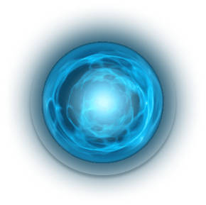
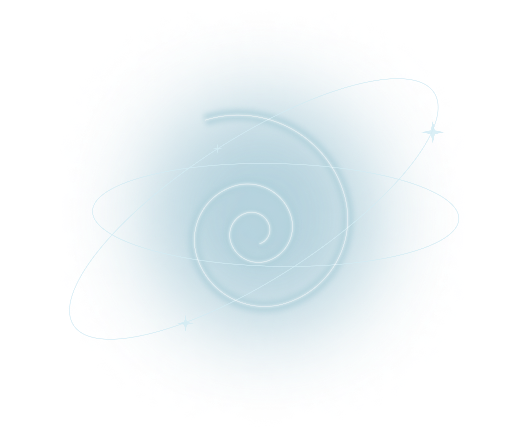

Как всего за 5 дней научиться использовать свой
биоэнергетический потенциал, понять квантовые
законы, отпустить «вековые зажимы» и изменить курс
жизни.
Хотите изменить свою реальность ?
На ту, в которой вы здоровы, богаты, счастливы и обладаем всеми
качествами и способностями того идеального образа
себя, что присутствует у вас в мыслях? Причем научиться это
делать, испытывая радость и вдохновение.
Это возможно! Ведь направление нашего внимания совпадает с
направлением нашей энергии. Как следствие - мы сами
воздействуем на материальный мир, мы сами определяем
собственную реальность.

Но все не так просто…
Мы живем набором заученных моделей поведения, мыслей и
эмоциональных реакций, иногда даже не осознаваемых нами. Поэтому
недостаточно просто «мыслить позитивно», так как негатив может
храниться в подсознании и закрепляться на уровне тела, необходимы
еще работа с телом и проработка глубинных установок.
«Квантовая психоэнергетика»
— уникальная перезагрузка жизни.
Он состоит из 6 составляющих, после прохождения которых вы поймете,
как внести позитивные изменения в свои программы, как мыслить
по- новому, как материализовать свои желания. Овладеете
инструментами,
которые перестроят ваши мысли и эмоции, благодаря чему создадите
новое Я.
Что вы получите, пройдя курс?
Научитесь жить здесь
и сейчас
Начнете доверять
себе и миру
Перестанете сливать
энергию
Поток энергии и
новые результаты:
финансовые и
социальные
Инсайты, которые
помогут вам перейти
на лучший уровень
жизни
Уверенность в себе и
в своих решениях
Курс подойдет для всех
Кто стремится к равновесию и здоровью, к
психической и физической стабильности
Кто хочет помочь себе и своим близким
в процессе болезни
Кто занимается здоровьем клиентов
Для врачей, психологов и энергопрактиков
Кто хочет сам управлять своей жизнью
и доходами
Кто хочет понять свою уникальность и
найти глубинную суть
Кто устал от работы или декрета, а менять
что-то страшно

Каждый из вас сможет начать заниматься этими практиками, даже если
ранее не оздоравливал людей. Клетки начинают дышать, проходят
заболевания, появляется мужская сила и женская чувственность.
Программа курса
1. Квантовое строение мира
Понять происходящее (объективно и субьективно) - процесс перехода в 5
мерность
Принятие Себя, выравнивание биоструктур организма и нахождения своей
точки равновесия или свечения.
Это взаимодействие с духовной составляющей Человека. Самоисцеление.
Информация о состоянии нас всех и окружающего Мира в точке встречи
(тут немного теории и много инсайтов). Соединим Дух-Душа-Тело, включим
расширение.
2. Пробуждение энергии
Получение новых ощущений и чувств. Это набор приемов по пробуждению
очень глубоких энергий человека.
Ум сковывает тело. Запирает энергию. Восприятие мира через ум
отражается в негибком, застывшем теле. Застывшее тело не даёт пережить
новые чувства. Можно чувствовать или можно придумывать, что ты
чувствуешь. Можно жить или можно придумывать, что ты живёшь.
Когда мы не оцениваем через ум, тогда нет внутреннего диалога, который
часто мешает расслабиться, спокойно уснуть, принять решение,
чувствовать мир и партнёра в любви.
3. Бесконтактный массаж. Джуна
Мы дадим Вам знания использования своего биоэнергетического потенциала
по методу Джуны.
Основа методики – профилактическая направленность, каждому человеку
эта методика доступна. При лечении любого органа воздействие идет на
весь организм, и устраняется предрасположенность к другим
заболеваниям. На нашем курсе вы овладеете знаниями использования
своего биоэнергетического потенциала по методу Джуны. Этого
структурированного материала вы не найдете ни в одном источнике – он
передан лично из уст в уста.
После обучения вы сможете извлекать из энергетического пространства,
накапливать и целенаправленно распределять энергию в больном организме
человека. Научитесь, как без лекарств восстанавливать здоровье и
продлевать жизнь. Главное - знать, как и куда направить свою энергию.
Методика отнюдь не идет вразрез с медициной, а наоборот, ее
дополняет.В третьей части мы дадим Вам знания использования своего
биоэнергетического потенциала по методу Джуны. Этого
структурированного материала Вы не найдете ни в одном источнике – он
передан лично из уст в уста. Вы научитесь движениям, выравнивающим
энергоструктуры Организма, и рецептуру применения при различных
состояниях/заболеваниях. Ценность этих знаний и умений трудно
переоценить, и пришло время брать в свои руки ответственность за свое
здоровье, здоровье своей семьи, а, возможно, и помощь людям, если Вы
почувствуете этот потенциал
4. Телесные практики
Телесные практики — Это набор мягких техник, посредством которых можно
легко научиться доверять миру и глубоко расслабиться.
Наше тело держит в себе массу зажимов, которые одной психологией не
убрать. Необходимо уметь концентрироваться в нужный момент и, что
более важно – уметь расконцентрироваться, отпуская «вековые» зажимы
(именно вековые – так как часто они идут по Роду, от родительских
установок и/или собранные из социума).Гибкость ума, множество
возможных реальностей в голове соответствует пластичности тела. На
тело можно воздействовать через ум, а можно на ум воздействовать через
тело.
Если мы начнём вводить новые привычки тела, то начнут появляться и
новые привычки ума. То есть расширение количества движений тела
приведёт к расширению возможных реальностей. И как следствие -
нарастает количество новых ощущений и чувств. Терапевтическая
составляющая. Каждый из участников пройдет сессию терапии (если
пожелает личную), но, если Вы пока не готовы лично открыться – то
участвуя в сессиях других участников – Вам будет дана «роль», которая
обязательно откликнется чем-то личным. Таково уж волшебство
психологии.
5. Сценарий жизни. Судьба
Свой сценарий жизни каждый из нас создаёт, будучи ребёнком. Находясь
под влиянием близкого окружения: родителей, бабушек и дедушек, мы
постепенно выковываем модель своего будущего из фрагментов
положительных, драматических и трагичных событий, которые смогли
произвести на нас неизгладимые впечатления.
Сценарий жизни пишется на подсознательном уровне. Поэтому многие даже
не догадываются о его существовании. И тем более о том, что его можно
изменить.
Это возможность освободиться от ограничивающих убеждений, которые не
дают развиваться, благополучно жить и наслаждаться каждым днем. Шаг за
шагом вы с вами бережно перепишем ваш сценарий жизни и направим к
выходу из замкнутого круга.
6. Индивидуальные консультации
Терапевтическая составляющая. Каждый из участников по желанию пройдет
сессию терапии.
Индивидуальная работа с психологом — это прицельный разбор вашей
личной ситуации в вашем специфическом контексте.
Вы получаете все внимание от психолога. И это позволит специалисту
быть тщательным в понимании ваших вопросов и в разработке
индивидуального подхода.
Суфийское пространство
Целью Суфизма является развитие наилучших качеств человеческой
природы, таких как: Чистота Сознания, Чистота Сердца, Чистота
Поступков. Наши практики — это создание Пространства, где каждый
из нас его часть. Находясь в одном поле, вы получите ощущение
наполнения, включится осознаность.
В этом пространстве произойдет много инсайтов и ответов. Чтобы
знать, как это – быть Свободным, чтобы ощутить связь между
Прошлым, Настоящим и Будущим. И чтобы ощутить вкус Пространства –
для начала мы с коллегами, как проводники, бережно проведем Вас в
этот Путь.
Это отдельная практика. На нее можно прийти отдельно от курса.
Занятие будет проходить в прекрасном загородном коттедже в ночь с
1 по 2 сентября
Что вы сможете после курса?
Уметь расслаблять клиентов, делать чувственными, сонастраивать к
обстоятельствам ситуации и к значимым для них людям с помощью
повышения их энергопотенциала и здоровья
Быть востребованным специалистом, особенно в настоящее время, когда
люди очень устают от стрессов и эмоций
Быть на одной волне с клиентом, понимать его и помогать, не
присоединяясь к отрицательной энергии
Стать специалистом в области бесконтактного массажа, которым можно
работать на расстоянии. Работе с фантомами будем учить
Поймете, как успешно строить свою жизнь в радости и любви, с
денежным потоком
Не боятся поставленных Миром задач, успешно их решать
Управлять ситуацией, находить общий язык с начальством и коллегами
Создавать поле любви и гармонии
Быть спокойным и сильным при тревожных обстоятельствах
ИНСТИТУТ ЗДОРОВЬЯ
- лицензированная организация
Мы высоко ценим и уважаем наших учеников, поэтому они смело доверяют
нам!
Автономная некоммерческая организация дополнительного
профессионального образования «Институт Здоровья» осуществляет свою
деятельность в полном соответствии с российским законодательством.
Мы располагаем лицензией, подтверждающей право оказывать
образовательные услуги. Также вы можете ознакомиться со
свидетельством, подтверждающим авторство программы.
Мы, как образовательная организация, имеем право выдать документы,
подтверждающие Ваш навык (Свидетельство, Сертификат).
По номенклатуре профессий – это бесконтактный массаж по методу Джуны
Давиташвили.
Стоимость
Квантовое
строение мира
Пробуждение
энергии
Бесконтактный
массаж. Джуна
Телесные
практики
Сценарии жизни.
Судьба
Суфийское
пространство
Рассрочка на 3-12 месяцев 4 167 РУБ/мес.
Полная оплата 53 000
50 000 РУБ
одно занятие
«Суфийское
пространство» - это
отдельная практика
К ней может
присоединиться
любой желающий
А также повторно
все, кто обучился
ранее
2 ПО ЦЕНЕ 1
Каждый повторный
раз вы можете
пригласить с собой
новичка
Стоимость за двоих
будет составлять
также 15 000 руб.
Суфийское
пространство
Рассрочка на 3-12 месяцев 1 250 РУБ/мес.
Полная оплата
15 000 РУБ
Количество мест ограничено, так как работа проводится в рамках
небольшой группы
Что в итоге
Поймете, как можно зарабатывать, строить отношения, заниматься
любимым делом в легкости и без выгорания
Поймете истинные желания, что ваше,
а что навязано установками
Наполните себя энергией, которую почувствуют ваши клиенты
Выстроите здоровые отношения с деньгами
Почувствуете свою суть и поймете, как лучше себя реализовать
Станете специалистом, который может выравнивать энергию и
эмоциональное состояние своих клиентов
Найдете твою уникальность и поднимите самоценность


 Кто стремится к равновесию и здоровью, к
Кто стремится к равновесию и здоровью, к  Уметь расслаблять клиентов, делать чувственными, сонастраивать к
обстоятельствам ситуации и к значимым для них людям с помощью
повышения их энергопотенциала и здоровья
Уметь расслаблять клиентов, делать чувственными, сонастраивать к
обстоятельствам ситуации и к значимым для них людям с помощью
повышения их энергопотенциала и здоровья
 Не боятся поставленных Миром задач, успешно их решать
Не боятся поставленных Миром задач, успешно их решать